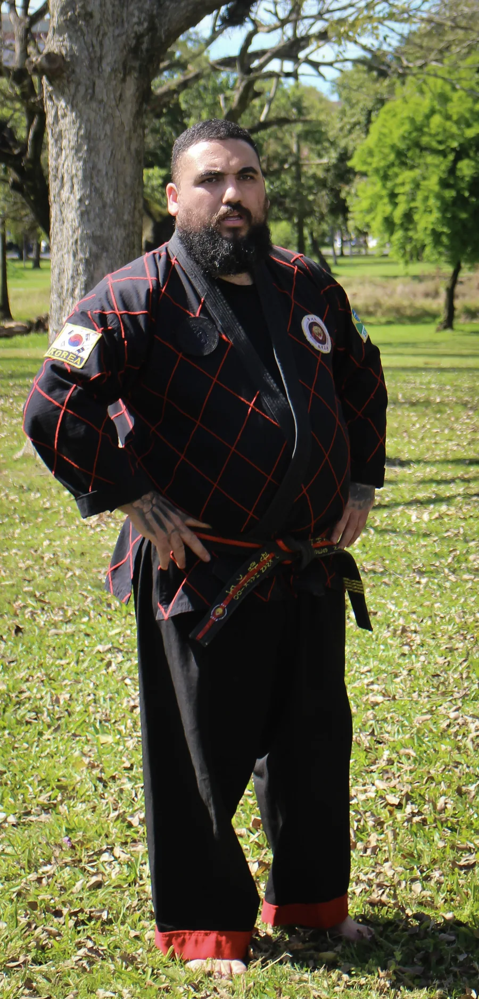
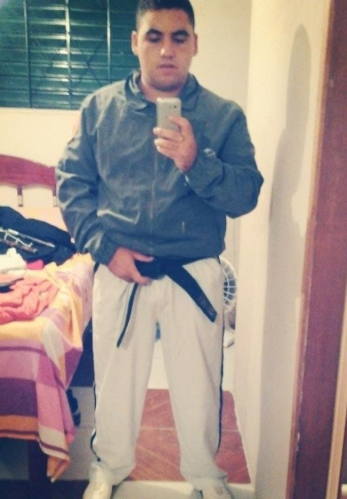
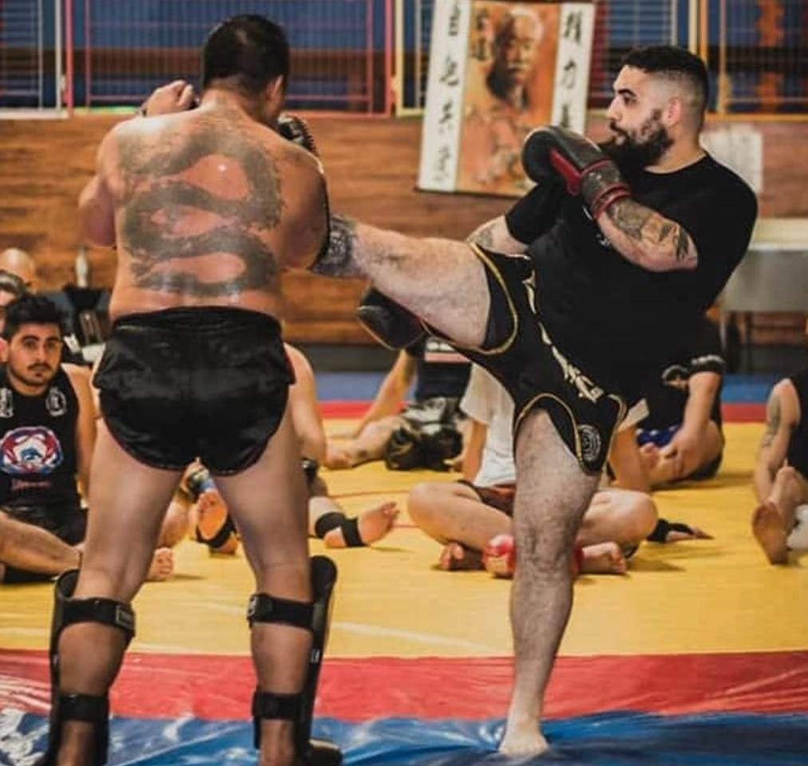
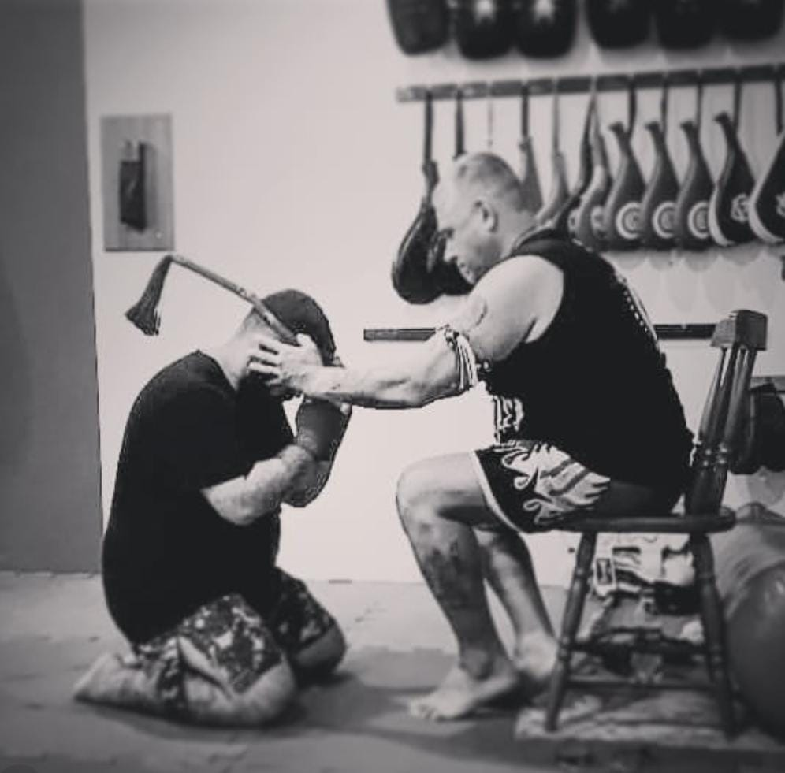
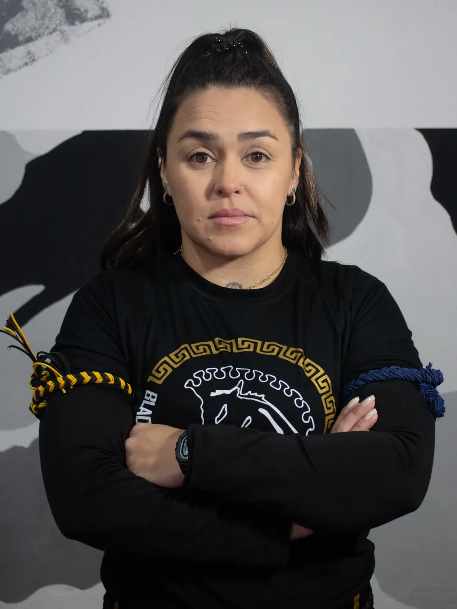
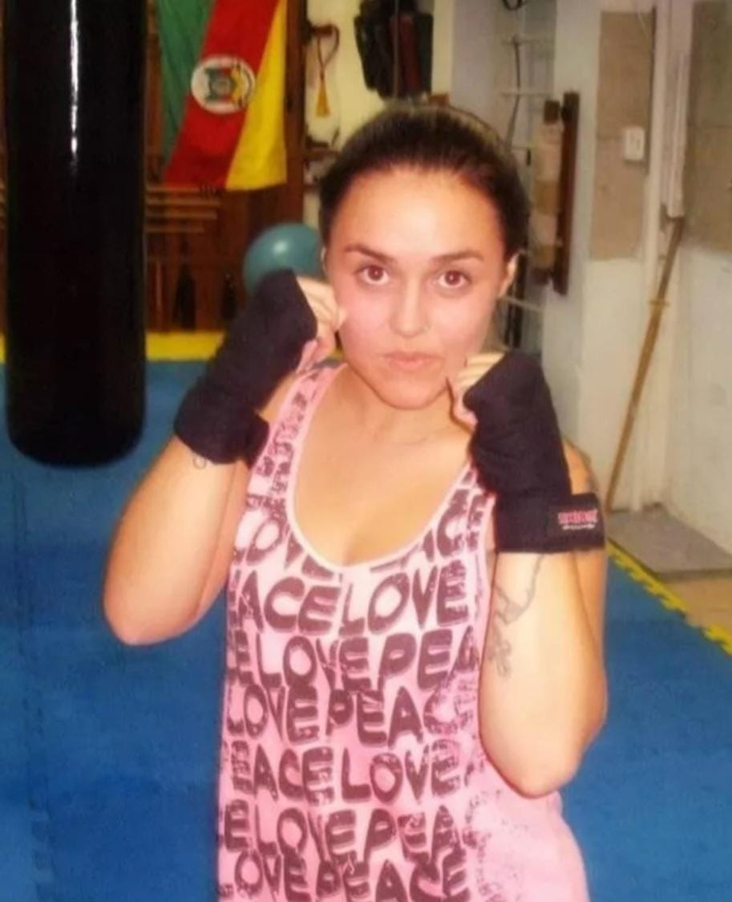
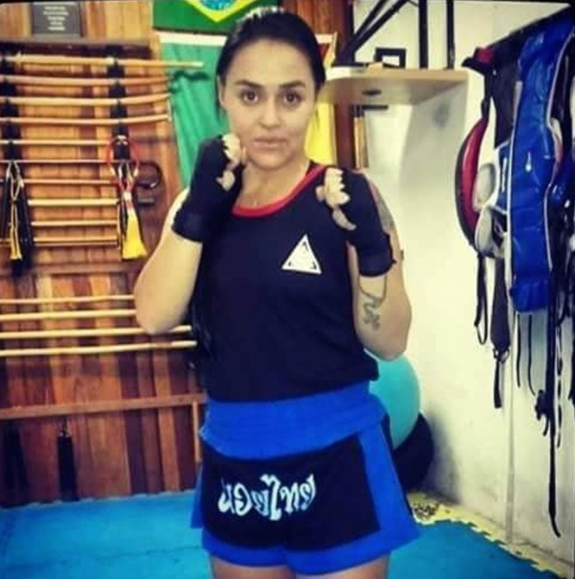
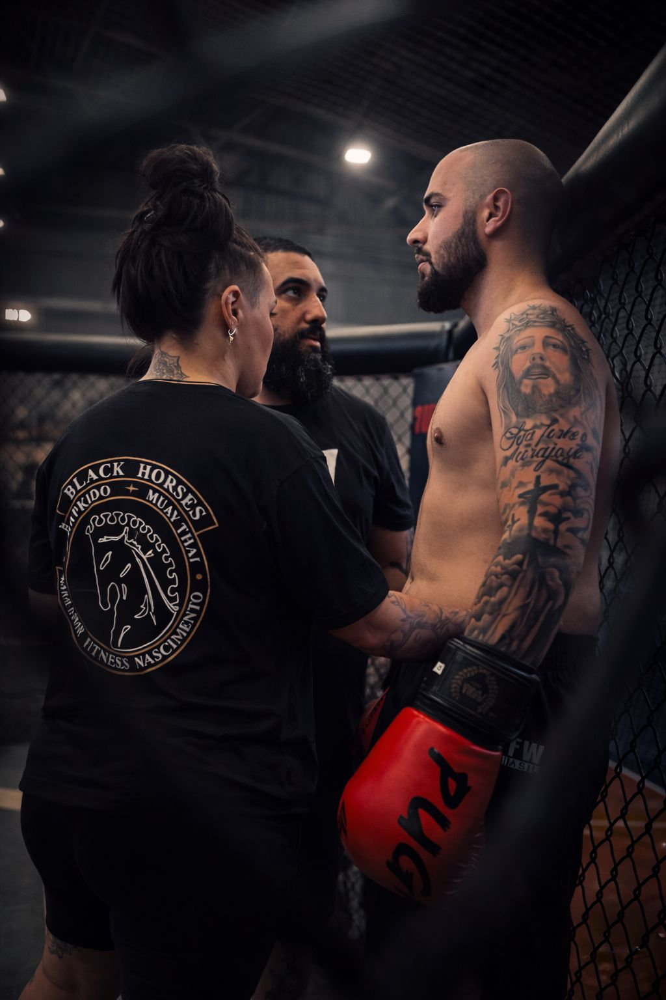

A história da Black Horses começa na zona norte de Porto Alegre, com aulas de Hapkido e Muay Thai. Os primeiros alunos não só treinaram — ajudaram a construir esse sonho, participando da escolha do nome e do espírito da equipe.
Com a pandemia, as aulas foram interrompidas. Mas a chama não se apagou. Com coragem e responsabilidade, recomeçamos com máscara, álcool em gel e força de vontade — primeiro com aulas particulares, depois retomando as turmas.
Na Engenharia do Corpo ZS, a equipe se fortaleceu de vez: uniformes, graduações, eventos e uma identidade cada vez mais sólida. Foi lá que a Black Horses ganhou forma definitiva.
Fundamos oficialmente a Escola de Artes Marciais Black Horses, com sede própria. No mesmo ano, entramos para as competições, com vitórias marcantes e presença constante em pódios.

Algumas pessoas encontram nas artes marciais um esporte. Outras encontram um propósito de vida.
Ulysses Nascimento iniciou sua trajetória nas artes marciais aos 12 anos. Desde então, transformou o tatame em uma escola permanente de disciplina, estudo e desenvolvimento humano.
Atualmente é 1º Dan de Hapkido pela SIBRADEPE, 4º Dan de Hapkido pela Jaiu do Kwan – Escola do Caminho Livre e Grau Preto de Muay Thai, resultado de décadas dedicadas ao aperfeiçoamento técnico e à formação contínua.
Desde 2013, ministra aulas de boxe, muay thai e hapkido, com a mesma filosofia que norteia a Black Horses: formar pessoas antes de formar lutadores.



Ao longo dessa caminhada, preparou atletas para competições, acompanhou inúmeros alunos em suas graduações e esteve presente como treinador e corner, conduzindo seus atletas dentro e fora da área de combate. Seu trabalho é pautado pela técnica, estratégia, disciplina e pelo compromisso com a evolução individual de cada praticante.
Como fundador da Black Horses Artes Marciais, acredita que uma academia deve ser um ambiente onde qualquer pessoa possa evoluir, independentemente da idade, experiência ou objetivo. Seja para competir, melhorar a saúde, desenvolver autoconfiança ou aprender defesa pessoal, cada aluno recebe atenção, respeito e incentivo para alcançar seu melhor.
Mais do que ensinar golpes, Mestre Ulysses dedica sua vida à construção de pessoas mais fortes, disciplinadas e preparadas para enfrentar os desafios dentro e fora do tatame.

Algumas jornadas começam com um sonho. A minha começou com um treino.
Foi no Muay Thai que encontrei muito mais do que uma modalidade esportiva. Encontrei disciplina, equilíbrio, autoconfiança e uma filosofia que transformou a forma como enfrento desafios dentro e fora do tatame.
Hoje, graduada em Grau Azul Escuro de Muay Thai, faço parte do comando da Black Horses Artes Marciais, unindo minha experiência como praticante à minha formação em Relações Públicas para fortalecer a gestão da escola e proporcionar a melhor experiência aos nossos alunos.



Sou responsável pela organização administrativa da academia, pelo atendimento aos alunos, pela comunicação da Black Horses e pelo acompanhamento da rotina da equipe. Também participo da preparação dos atletas para competições, oferecendo suporte durante os treinamentos e atuando como corner nos eventos, contribuindo para que cada atleta entre na área com segurança, estratégia e confiança.
Ao longo da minha trajetória, também tive a oportunidade de ministrar aulas para turmas de Muay Thai feminino, experiência que reforçou uma das minhas maiores convicções: ensinar vai muito além da técnica. É incentivar, acolher, corrigir, motivar e acreditar no potencial de cada pessoa.
Na Black Horses, acredito que cada aluno merece ser visto como indivíduo. Cada conquista — da primeira aula à preparação para uma luta — é construída com dedicação, respeito e compromisso.
Porque as artes marciais não transformam apenas o corpo. Transformam pessoas.